コマンドの立ち上げ方
右クリック→「Git Bash」を選択するとコマンド画面が表示される
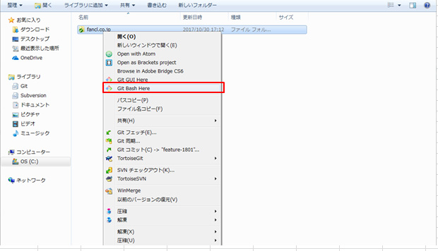ログ整理の「git rebase」のコマンドについて説明
コメントの編集-reword-
1.コメントを編集したいログを確認
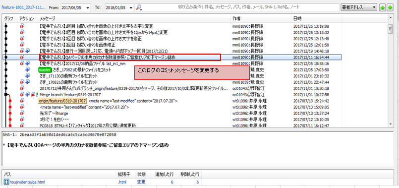2.コマンドラインを立ち上げ、一つ前のSHA番号をrebase -i で入力
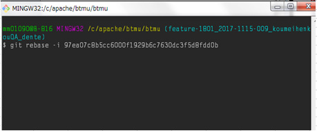表示させたログの中から変更したいログのひとつ前のSHAを確認、「git rebase -i 基点とするSHA-1」を実行
ログ全体を表示させるには「git rebase -i」
過去4つのログを表示させるには「git rebase -i HEAD~4」
リポジトリ作成直後の一番最初のコミットも含めて表示させるには「git rebase -i --root」
mergeのコミットログを表示させる場合は「git rebase -i -p」
3.下記画面が表示されるので、「i」を押下し編集モードにする
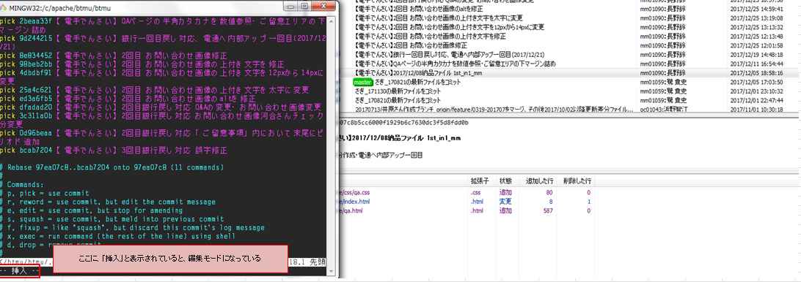4.編集したいコメントのあるコミットの「pick」を「reword」に変更
コメントもここで同様に書き換える
＜例＞
変更前：【電手でんさい】QAページの半角カタカナを数値参照・ご留意エリアの下マージン詰め
変更後：【電手でんさい】1st_in2
QAページの半角カタカナを数値参照・ご留意エリアの下マージン詰め
5.修正し終えたら、Escキーを押して、編集モードを終了し、コマンドで「:wq!」を押しEnter
6.ログが変更されていることを確認
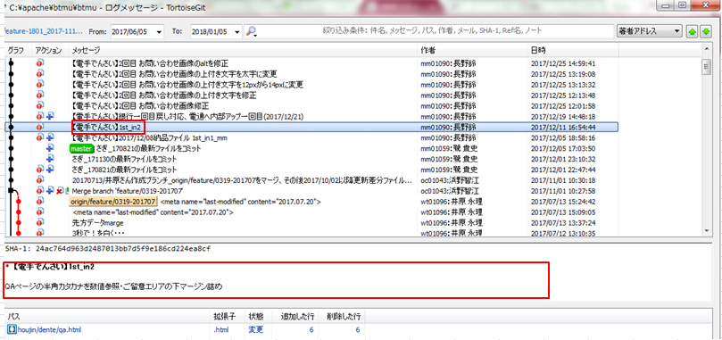7.強制プッシュをする
右クリックから強制プッシュをする場合「把握してる変更」にチェックを入れてプッシュすると強制プッシュができる。
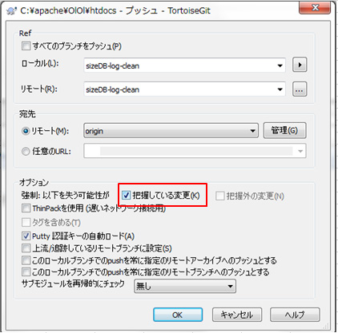ログの順番の入れ替え
1.コメントを編集したいログを確認。
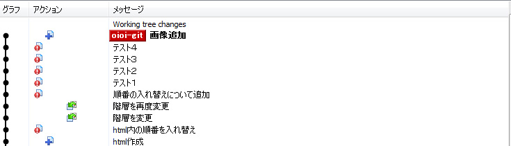「画像追加」を「テスト１」の下に持っていきたいとする
2.コマンドで「git rebase -i」を使用しログを表示
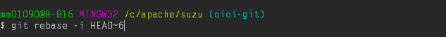3．順番を入れ替えたいログをコピーし、変更したい箇所にペーストする。
変更前
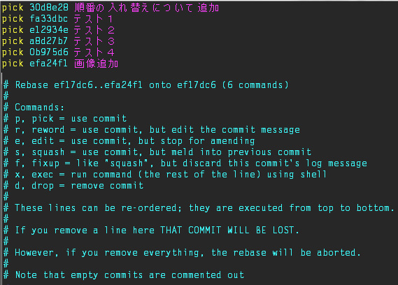変更後
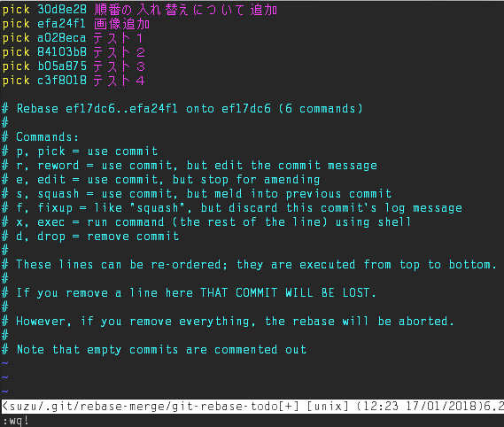4.Escキーを押して、編集モードを終了し、コマンドで「:wq!」を押しEnter
6.ログが変更されていることを確認

7.強制プッシュをする
右クリックから強制プッシュをする場合「把握してる変更」にチェックを入れてプッシュすると強制プッシュができる。
ログの合体-fixup-
1.コメントを編集したいログを確認し、最新のコミットから何番目か数える。
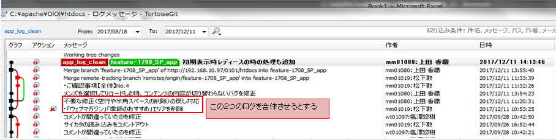2.コマンドに"git rebase -i HEAD~5"を入力しEnterを押す
3.下記画面が表示されたら、「i」を押して編集モードにする
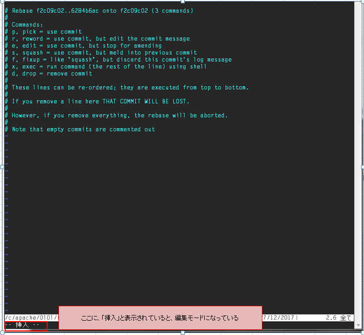4.合体させたいコミットのpickをfixupに変更
コマンドラインでは古いものが一番上にくる。
fixupすると、コマンドライン上では上のコミット合体させるが、
右クリから開いたログでは、下のコミットと合体される。
rebase後、画像の例ではログ上に『「ウェブマガジン」「季節のおすすめ」エリアを削除』のログが残るが、
ファイルは『「ウェブマガジン」「季節のおすすめ」エリアを削除』+「不要な修正」の内容となる。
5.修正し終えたら、Escキーを押して、編集モードを終了し、コマンドで「:wq!」を押しEnter
ファイルの上書き保存は:wを入力
次に、viエディタを終了するには:qを入力
組み合わせて:wqや:wq!と入力することもできる。
:wq!でファイル書き込みをして強制終了するという意味になる。（ ! は強制指定）
6.ログが変更されていることを確認
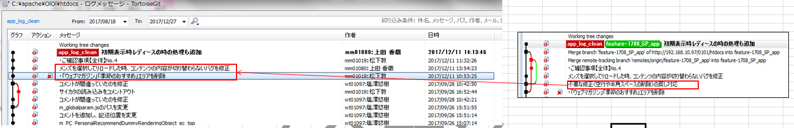変更後のログでは赤枠内の「不要な修正」のログが
『「ウェブマガジン」「季節のおすすめ」エリアを削除』に合体されてログから消える
7.強制プッシュをする
右クリックから強制プッシュをする場合「把握してる変更」にチェックを入れてプッシュすると強制プッシュができる。
やらかした時
1.Reflogを確認する
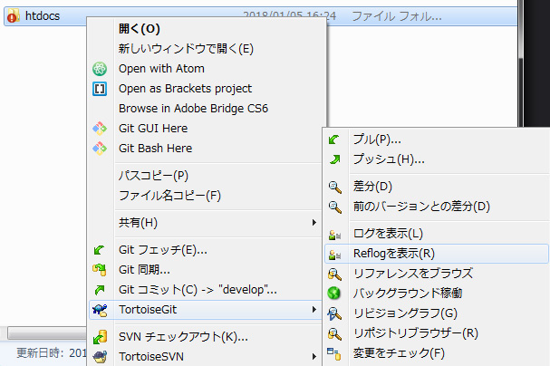右クリック→「TortoiseGit」→「Reflogを表示」でReflogを表示させ、戻したいログを確認する